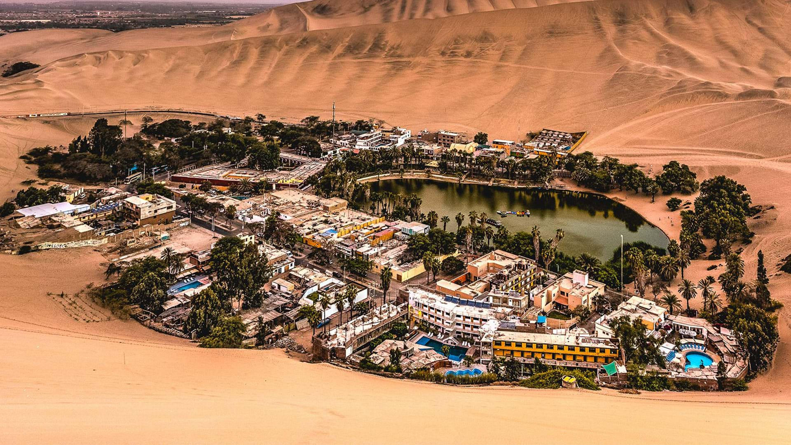

01 · OASIS NATURAL
Oasis de Huacachina
El principal atractivo turístico de Ica. Este oasis, rodeado de enormes dunas, permite practicar sandboard, paseos en tubulares y disfrutar de espectaculares atardeceres en el desierto.
MÁS INFORMACIÓN ↗